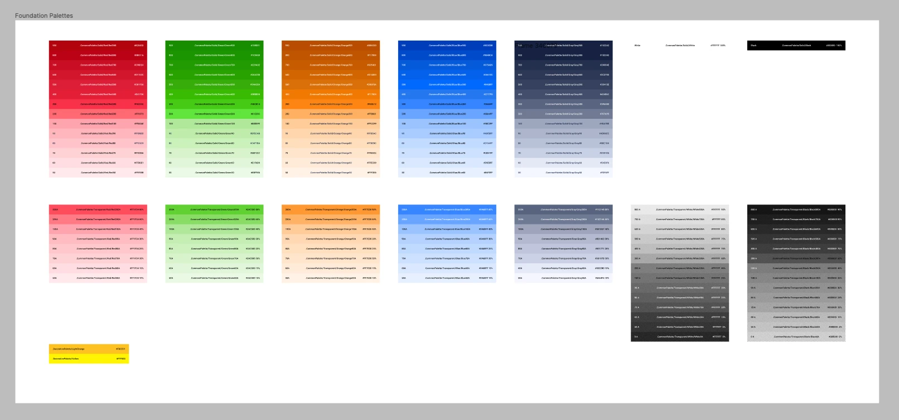
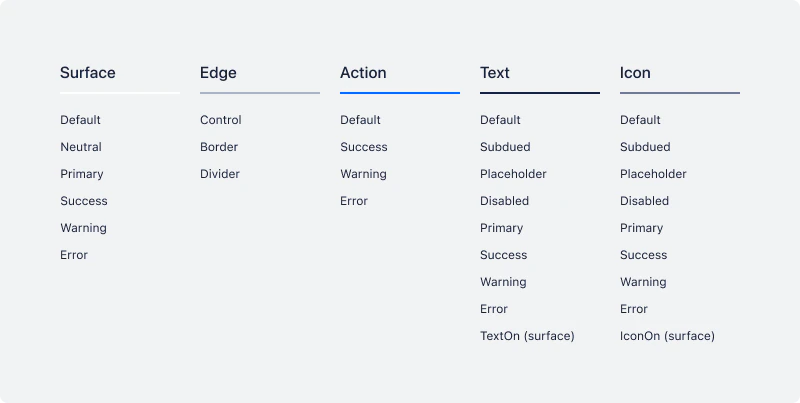
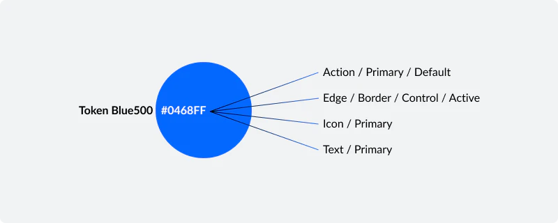
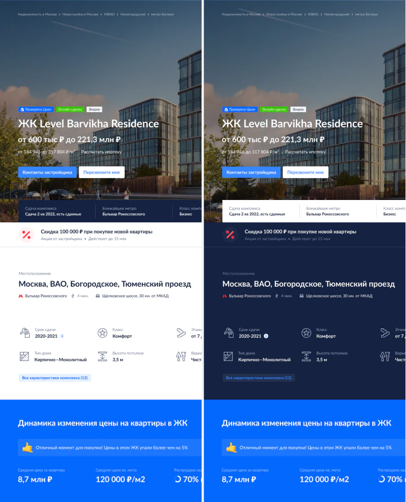
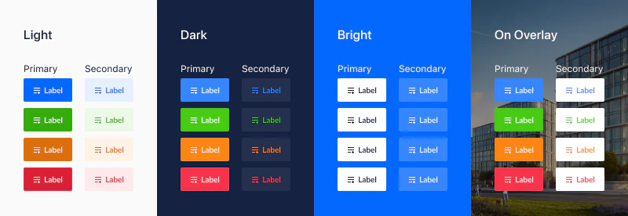

Cian · Foundations · Design tokens
Building a Cross-Platform Semantic Color System
I led a cross-platform audit that turned independently maintained primitive palettes into a shared semantic system—making existing color decisions understandable, predictable, and reusable.
Summary
Cian’s web, iOS, and Android libraries used similar but independently maintained color palettes. Most tokens were named as primitives such as green50, which described appearance but not purpose. The same token could represent several unrelated meanings, while similar meanings could also be expressed through different values.
I initiated and led a cross-platform audit to turn this accumulated color logic into a shared semantic system. The goal was not to redesign the product visually, but to make existing decisions understandable, predictable, and reusable across platforms.
My role: Design System Designer — audit, semantic architecture, validation, and stakeholder alignment
3 platforms · Around 20 designers involved · 5–7 design leads in core discussions · Implemented with minor adjustments
The problem
The product had evolved for many years across several teams and platforms. As a result:
- primitive token names did not explain whether a color represented a status, an accent, an action, or something else;
- the same color could be used for unrelated purposes;
- similar purposes could use different colors without a clear reason;
- web, iOS, and Android maintained separate palettes despite sharing a similar visual language;
- interaction states existed inside components, but there was no consistent semantic model behind them.
The challenge was not to create a new palette from scratch, but to extract a coherent system from years of accumulated design decisions.
Audit
I reviewed color libraries, design files, and production interfaces across web, iOS, and Android.
I placed large numbers of screens side by side and catalogued how each color was actually being used. Recurring patterns began to emerge around:
- text and icons;
- backgrounds and surfaces;
- borders, dividers, and controls;
- actions and buttons;
- statuses such as success, warning, and error.
I first grouped similar cases, then isolated the outliers. Where several slightly different colors served the same purpose, I brought those differences back to the design team and worked through them case by case.

From color values to semantic roles
The new model changed the designer’s question from “Which shade should I use?” to “What role does this element perform?”
Instead of relying on primitive names, colors were organized by function.

The system included semantic groups for text, icons, actions, surfaces, and edges, with explicit states such as Default, Hovered, Pressed, Selected, and Disabled.

The final system contained more tokens than the original libraries because interaction states were made explicit. The goal was not to minimize the absolute token count, but to eliminate arbitrary choices and make every remaining token intentional.
Validation on real product screens
Once the core structure was stable, I first applied it to components on a separate working sheet.
I then tested the system on one of the product’s most visually complex property pages in both Light and Dark themes. The page combined promotional blocks, imagery, accents, borders, inverted elements, and many different components, making it a useful stress test for whether the semantic roles could remain coherent across themes.

The visible change was intentionally small: this was a systemic redesign without unnecessary visual redesign.
Alignment with the design team
The hardest part was not defining the categories, but negotiating which visual differences were meaningful enough to preserve.
Designers were often protective of subtle color nuances. I used concrete comparisons to show where a small visual adjustment could reduce unnecessary variation and make the system easier to maintain.
For example, if several button variations could be expressed with two semantic roles instead of three unrelated values, that simplification became significant when repeated across the product.
I also kept naming deliberately broad. A designer needed to know that an element was a primary action or a surface placed above another surface, not that it belonged to one narrowly defined marketing context.
Result
I completed the architecture, aligned it with the design team, and documented the final structure before leaving the company.
According to former colleagues, the system was implemented with minor adjustments and remains in use today.
Retrospective
Some parts of the architecture reflected the conventions and constraints of that period.
At the time, I treated Light, Dark, Bright, and On Overlay as parallel themes.
Today, I would model only Light and Dark as global themes. Saturated backgrounds and image overlays would be handled as local interface contexts inside the same semantic system rather than as independent themes.

I would also reconsider some duplicated categories, such as separate Text and Icon groups, where a shared content-color model could be simpler.
The value of this project is not that every naming decision remains timeless. It is that the work demonstrates how I audited an inconsistent system, identified recurring roles, negotiated constraints, and turned them into a coherent cross-platform model.